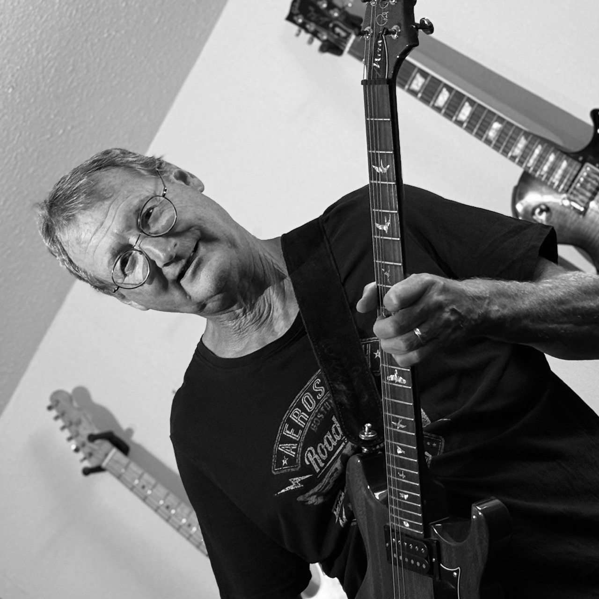

The
Shorts
Handgemachte Rock- und Pop-Cover, die jeden Raum zum Kochen bringen. Von leisen Akustik-Momenten bis zur Vollgas-Tanzflächen-Party.

Annie
Lead Vocals

Rob
Vocals · Akustikgitarre

Joe
Leadgitarre
Klaus
Leadgitarre · Backing Vocals

Andy
Bass

Torsten
Drums
Aus dem Repertoire
Highway to Hell · AC/DC
Come Together · The Beatles
Don't Stop Believin' · Journey
Shallow · Lady Gaga
Money For Nothing · Dire Straits
Valerie · Teddy Swims
Ironic · Alanis Morissette
All Right Now · Free
Tie Your Mother Down · Queen
Wicked Game · HIM
Honky Tonk Women · The Rolling Stones
… und viele mehr
Live bei euch — Datum & Location
donkey-shorts.com
Booking: info@donkey-shorts.com
Booking: info@donkey-shorts.com
Komplett In-Ear · eigene Technik nach Absprache